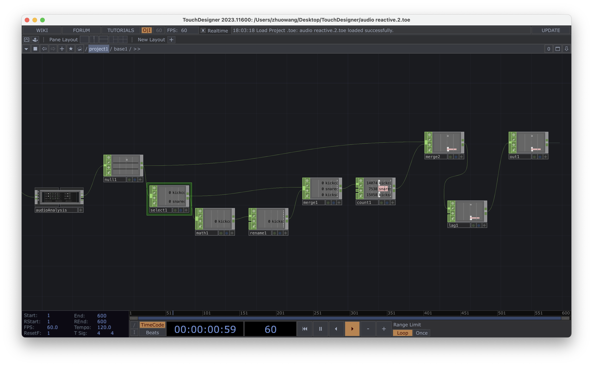
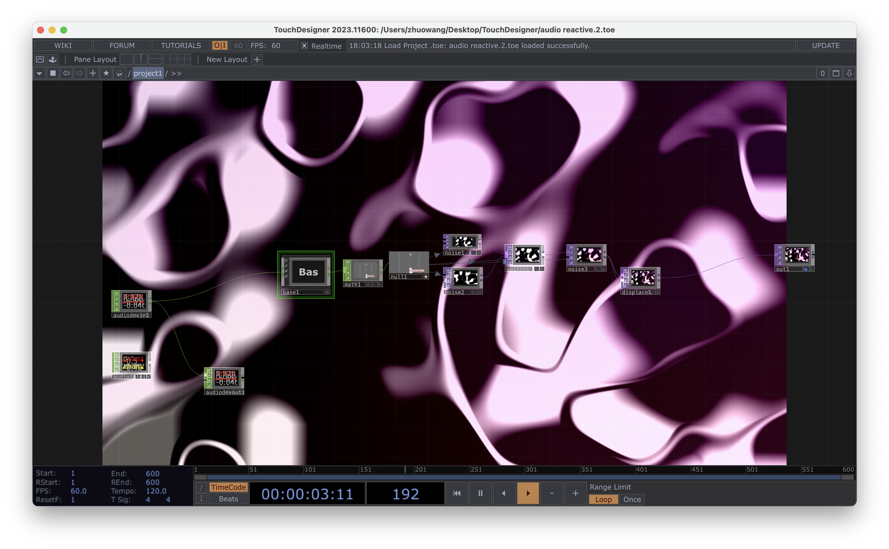
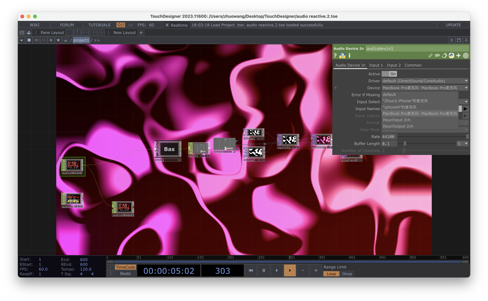

Project1_Kludging as a Creative Approach to Technology Brief
TouchDesigner+Guitar: Audio visualization
I tried to mimic this YouTuber's video by using TouchDesigner to visualize the sound of the guitar, allowing the image to change based on the beat of the music.
  